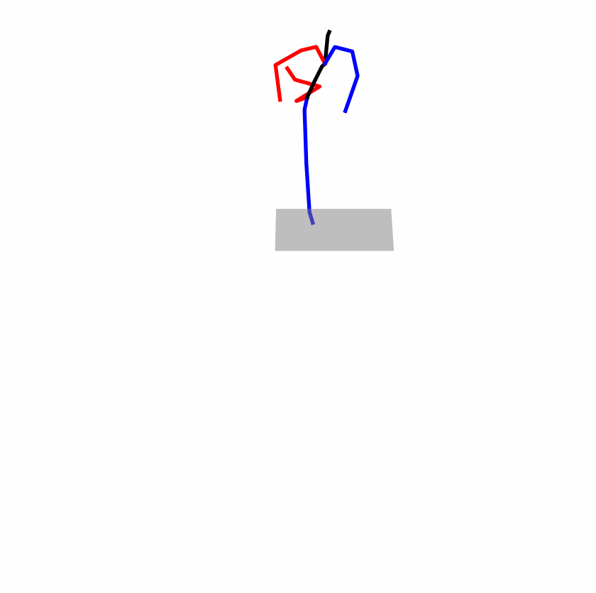
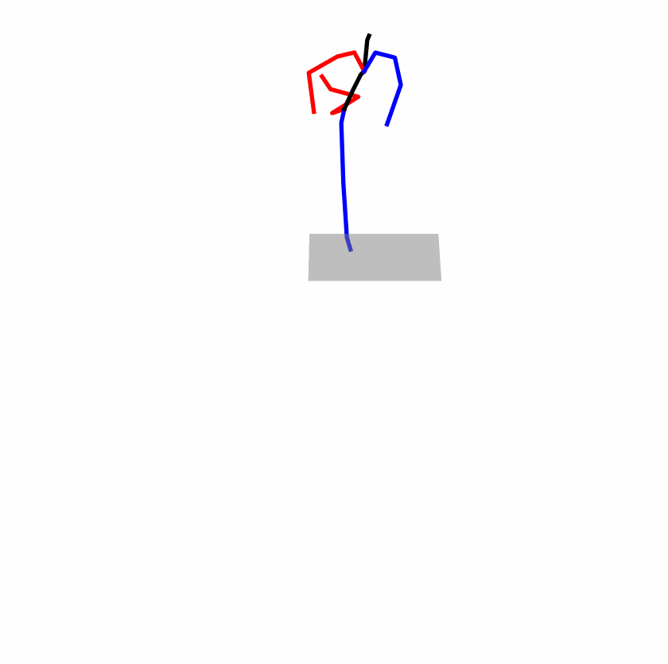

ABSTRACT
Is the Text to Motion model robust? Recent advancements in Text
to Motion models primarily stem from more accurate predictions of
specific actions. However, the text modality typically relies solely on
pre-trained Contrastive Language-Image Pretraining (CLIP) models.
Our research has uncovered a significant issue with the text-to�motion model: its predictions often exhibit
inconsistent outputs,
resulting in vastly different or even incorrect poses when presented
with semantically similar or identical text inputs. In this paper, we
undertake an analysis to elucidate the underlying causes of this
instability, establishing a clear link between the unpredictability
of model outputs and the erratic attention patterns of the text en�coder module. Consequently, we introduce a
formal
framework
aimed at addressing this issue, which we term the Stable Text�to-Motion Framework (SATO). SATO consists of three
modules,
each dedicated to stable attention, stable prediction, and main�taining a balance between accuracy and robustness
trade-off. We
present a methodology for constructing an SATO that satisfies
the stability of attention and prediction. To verify the stability of
the model, we introduced a new textual synonym perturbation
dataset based on HumanML3D and KIT-ML. Results show that
SATO is significantly more stable against synonyms and other
slight perturbations while keeping its high accuracy performance.
We have presented more intuitive visualizations on the anony�mous website:
https://anonymous.4open.science/api/repo/project-
1FC7/file/SATO.html
Existing Challenges
A fundamental challenge inherent in text-to-motion tasks stems from the variability of textual inputs . Even when
conveying similar or the same meanings and intentions, texts can exhibit considerable variations in vocabulary and
structure due to individual user preferences or linguistic nuances. Despite the considerable advancements made in
these models, we find a notable weakness: all of them demonstrate instability in prediction when encountering
minor textual perturbations, such as synonym substitutions. We establish a clear link between the
unpredictability of model outputs and the erratic attention patterns of the text encoder module. The stability of
the model manifests in the consistency of textual attentionand its ability to handle perturbations in text
features, highlighting its pivotal role in mitigating such errors.
Network
Attention Stability. For the original text input, we can easily observe the model’s attention vector for the
text. This attention vector reflects the model’s attentional ranking of the text, indicating the importance of
each word to the text encoder’s prediction. We hope a stable attention vector maintains a consistent ranking even
after perturbations.
Prediction Robustness. Even with stable attention, we still cannot achieve stable results due to the change in
text embeddings when facing perturbations, even with similar attention vectors. This requires us to impose further
restrictions on the model’s predictions. Specifically, in the face of perturbations, the model’s prediction should
remain consistent with the original distribution, meaning the model’s output should be robust to perturbations.
Balancing Accuracy and Robustness. Accuracy and robustness are naturally in a trade-off relationship [21, 30].
Our objective is to bolster stability while minimizing the decline in model accuracy, thereby mitigating
catastrophic errors arising from input perturbations. Consequently, we require a mechanism to uphold the model’s
performance concerning the original input.


 
